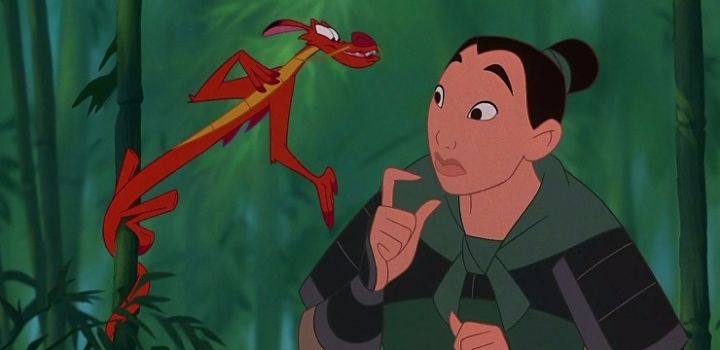

I have a little bit of a soft spot for Disney's 1998 film "Mulan," because (I think) it was the first movie I was old enough to see in a proper movie theater, instead of in a collection of VHS tapes at home. I remember all the merchandising leading up to it. I remember the initial teaser trailers and dramatic posters, which promised a serious, cultural epic. I think my generation at large has fond memories just based on the timing, and today, some of the musical numbers still rank highly on YouTube. "Mulan" was the natural progression for Disney in the late 90's. They were incresaingly looking for different settings and cultures to represent their tales to keep things fresh and politically correct. We got the Americas with "Pocahontas," Africa with "The Lion King," Greece with "Hercules"... Asia felt like the right place to go next. Decades later, Disney tends to represent the same country in two or three movies and still claim diversity, while ignoring a few hundred other distinct countries that could actually use the attention, but that's besides the point. "Mulan" is based on an old folk tale from China, and set out to be a respectful action movie in her honor, while also being a fun family musical, as per Disney tradition. Set in Ancient China, the Huns have climbed over the Great Wall, and march forth to conquer the capital. With the country at risk, the Emperor initiates an order for one man from every family to serve in the army. Mulan, a young woman from the Fa family, was preparing to become a proper young lady, to find a good marrying partner through the town's matchmaker, and bring honor to her family. As expected of all women at the time, but a challenge since, like most normal people, Mulan tends to sleep in, finds shortcuts to finish chores, and has trouble memorizing lines and manners, not exactly lady-like qualities. She's horrified at the thought of her older father (the only man in the family) going off to war, and he won't listen to reason to reject the order, despite barely being able to walk. With a future as a lady inreasingly unlikely, and her father at risk of dying in battle, Mulan takes a huge risk and sneaks out with her father's armor, intent on taking his place in the war. A brave move, but if she's discovered to not be a real man, she could be executed for the federal crime. The family's local temple of ghosts sends out a guardian to watch over and guide Mulan to safety, ideally to bring her back home before it's too late. That guardian is... not supposed to be Mushu, a tiny red dragon, but when he messes up waking up the real guardian, he rushes out to take HIS place. And his plan isn't just to bring back Mulan, but to help her thrive in the army and come back a war hero, proving everyone wrong about what women can and can't do. Noble idea, but it'll be a challenge, to say the least. Not just hiding the gender, but also surviving, because you know, war.  The expected roles of women in this movie are a little more explicit than prior movies, but also not unusual; Disney had been featuring Princesses fighting to prove their independence and ability to stand toe to toe with men for some time. It's a little more natural for American audiences here, since the setting is further back in history, and is in a different country to which we don't know the norms. While Mulan does eventually find a romantic interest, her story isn't defined by it. She actually has a purpose, to save her father and, surpassing expectations, save the country, and the romance is just a side-effect. That's a lot more than other Disney heroines, whose stories seem to revolve around finding a partner just to rebel against their expectations. "Mulan" does have it's share of dramatic, solumn moments, and some exciting moments of action and quick thinking in the heat of battle. But this isn't "Crouching Tiger, Hidden Dragon," and the choreography isn't as fine-tuned as it ought to have been. Of course, a lot of the movie is humorous, playing to younger kids in the audience, whether that's with Mulan acting like a tough man (and failing), or her sidekick Mushu snapping back at her, her horse or lucky cricket friend. The humor is fun, but works better in some scenes more than others. The actors, made up primarily of Asian actors (not all Chinese), do a solid job. Eddie Murphy as Mushu is the one odd choice, clearly intended to copy the success of actors like Robin Williams in "Aladdin." And he gives a bold, fun energy to the movie, but it feels way out of left field to hear a modern-American voice in a movie about Ancient China. The songs are better than you might think, and are probably considered to be classics among the post-peak-Renaissance period for Disney. The visual production is a bit mixed though. In the dramatic scenes, featured heavily in teaser trailers, the serious tone is excellent, and the visuals look more meaningful. But for most of the movie, the characters and environments are purposely simplified, and not as lush as prior movies, perhaps a sign of things to come for Disney. Of course, Chinese art and ink paintings helped inspire the visual style, although the use of swirls reminded me more of Disney's Greece-set "Hercules" than it did of China. If we had gotten a more consistent-looking adult movie, leaning more into the serious drama, this could have been a movie for the ages, but instead it's just a fun and unusally fresh kids' movie. I admit it gets a lot more right than wrong though, including a respectful-yet-colorful portrayal of China, some positive messaging regarding cross-dressing, and a tear-incuding moment when Mulan is finally given the respect she deserves. "Mulan" (and "Tarzan" afterwards) are fresh new stories for what makes a Disney movie, while still feeling at home to the comapny's family-entertainment.
- "Ani" More reviews can be found at : https://2danicritic.github.io/ Previous review: review_Monster_Musume_-_Everyday_Life_With_Monster_Girls Next review: review_Mushi-Shi